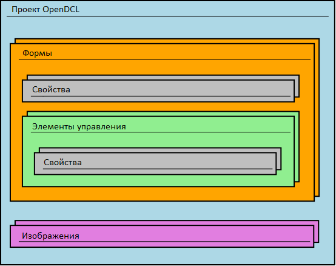

Интерфейс AutoLISP используемый OpenDCL использует понятия, заимствованные из объектно-ориентированного программирования, но, строго говоря, AutoLISP сам по себе не объектно-ориентированный. Тем не менее, вOpenDCL существует объектная модель, и очень полезно понимать эту модель при программировании с OpenDCL. Условием использования в OpenDCL вызова методов объектов является указание экземпляра объекта в качестве первого аргумента функции.
Объекты OpenDCL представлены в AutoLISP в качестве имен объектов (имя объекта - это просто указатель в памяти на экземпляр этого объекта). Когда проект OpenDCL загружен, OpenDCL автоматически назначает символ AutoLISP для каждой формы, имеющейся в проекте. В то время как форма активна, OpenDCL также устанавливает свои символы AutoLISP для каждого элемента управления на ней. Свойсвто VarName у форм и элементов управления определяет имя символа AutoLISP, используемого для ссылки на объект. Например, показывать форму можно вызвав метод Form-Show с указателем этой формы качестве первого аргумента:
(dcl-Form-Show Project1/Form1)
В этом примере Project1/Form1 является символом AutoLISP, который автоматически устанавливается OpenDCL в качестве указателя на форму после загрузки проекта.
Объектная модель OpenDCL
Основным типом объекта OpenDCL передаваемого в AutoLISP является элемент управления. Сами формы так же представляют из себя элементы управления, так что методы могут применяться и к ним. Другим фундаментальным объектомOpenDCL является проект. OpenDCL также предоставляет специализированные объекты, такие как ImageList, BinFile, и AxObject. Каждый из этих типов объектов имеет свои собственные методы, которые могут вызываться в следующем формате:
(dcl-METHODNAME <OBJECT> ARGUMENTS)
Каждый элемент управления содержит список свойств. Различные лемент управления содержат различные свойства, но все элементы управления одного типа содержат одинаковые свойства. Некоторые из них, такие как элементы ActiveX, могут содержать дополнительные свойства, которые используются отдельно от встроенных свойств OpenDCL. Свойства не представлены как самостоятельные объекты; доступ к ним осуществляется через их элемент-владелец по имени, используя следующий шаблон (где PROPERTYNAME является свойством соотв. имени API):
(dcl-Control-GetPROPERTYNAME <CONTROL>)
(dcl-Control-SetPROPERTYNAME <CONTROL> NEWVALUE)
Так же доступ к свойствам можно получить используя методы Control-GetProperty и Control-SetProperty.
Структура проекта OpenDCL
Как показывает следующая диаграмма, проект OpenDCL содержит формы и рисунки. Формы содержат свойства и элементы управления. Элементы управления также содержат свойства. Исполняемый модуль OpenDCL разработан так, чтобы позволить загрузку неограниченного количества проектов одновременно, так что множество независимых OpenDCL приложений могут функционировать внутри AutoCAD не мешая друг другу.

Указатели элементов управления OpenDCL
Элементы управления (и формы) ссылаются в коде AutoLISP с помощью символов AutoLISP, содержащими указатель элемента управления. Эти символы автоматически создаются в пространстве имен AutoLISP в каждом чертеже AutoCAD пока активен экземпляр формы. Имя символа AutoLISP по умолчанию для этого указателя строится путем объединения имени проекта, имени формы, и имени элемента управления, разделеных косой чертой, как в этом примере:
((dcl-Control-GetName ProjectKey/FormName/ControlName)
Имя символа по умолчанию можно переопределить, установив элементу свойство VarName, но рекомендуется использование именования по умолчанию, чтобы свести к минимуму риск совпадения имен символов в разных приложениях.
На элементы управления и формы также можно ссылаться, указывая их путь в иерархии проекта в виде отдельных строк, как в этом примере:
(dcl-Control-GetName "ProjectKey" "FormName" "ControlName")
Метод с символами Lisp работает только когда активна форма содержащая данный элемент управления, а метод строк может использоваться для обозначения любого загруженного элемента управления даже тогда, когда его форма не активна. Метод отдельных строк также полезен при выполнении той же операции для целого списка элементов управления, как в этом примере:
(foreach control '("Control1" "Control2" "Control3") (
dcl-Control-SetEnabled "ProjectKey" "FormName" control NIL))